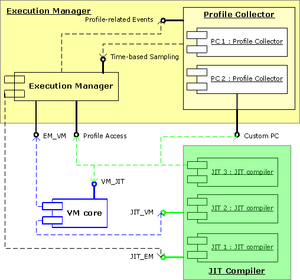

This document describes the internal structure of the execution manager component deployed with the virtual machine as part of the DRL (Dynamic Runtime Layer) initiative. The description covers the internal design of the execution manager and its interaction with other DRLVM components. The document is targeted at DRLVM developers with special interest in code execution algorithms. The information can be helpful for future development of DRL execution management techniques and can serve as an example for those implementing an execution manager from scratch.
In this document, you can find implementation-specific details of the execution manager. General information on the EM role in overall virtual machine design and VM-level requirements are out of scope of this document and are covered in the DRLVM Developer's Guide [3] .
The target audience for the document includes a wide community of engineers interested in using DRLVM and in working further with the product to contribute to its development. The document assumes that readers understand the concepts of dynamic optimizations, recompilation and profile collection.
The DRLVM execution manager description has the following major sections:
This document uses the unified conventions for the DRL documentation kit.
The execution manager is responsible for selecting execution engines (a JIT compiler or an interpreter) for method compilation and execution at run time. The execution manager (EM) takes input from its configuration settings and run-time profile information. The DRL execution manager also uses profile collectors to gather run-time data associated with method code and the just-in-time (JIT) compiler that produced the code. The execution manager, profile collectors, and execution engines plugged in VM make up the dynamic optimization subsystem [1], [2].
The execution manager instantiates execution engines depending on its configuration [4] and the current VM mode.
For a definition of the role of EM in the architecture of DRLVM [3].
The key features of the DRL execution manager include the following:
This section of the document describes the internal architecture of the execution manager and its external connections with other components of the virtual machine. In brief, EM communicates with the VM core and with execution engine(s) at the VM level. Internally, the execution manager has a profile collector as its subcomponent, and uses internal functional interfaces to communicate with it, as described in section Profile Collector.
The VM core component sends requests to EM to execute methods. VM
passes a method handle and parameters to the execution manager through
the EM_VM interface. EM selects the
engine for compiling the method and sends a compilation request to VM
to compile the method with the selected engine.
Instantiating and configuring JIT compilers goes through
the JIT_EM interface [3]. In
its turn, the execution manager exports the EM_JIT
interface for accessing method profiles and profile collectors.
Specifically, the EM_JIT interface consists of
two parts:
These interface interactions are shown in Figure 1 and described in detail in section Public Interfaces.

Figure 1. Execution Manager Interfaces
In the figure, several blocks of the same type identify instances of the same component, as in the case with profile collectors and JIT compilers. For details on interfaces displayed in the figure, see section Public Interfaces.
The profile collector (PC) is a subcomponent of the execution manager that collects method profiles for Java* methods compiled by a JIT or executed by the interpreter. DRL EM instantiates and configures profile collectors according to the settings of its configuration file.
The profile collector can collect method profiles only for the methods compiled by a single JIT. To collect the same type of profile information for methods compiled by different JIT compilers, the execution manager uses different PC instances.
After PC collects a method profile, subsequent JIT compilers in the
recompilation chain can re-use this profile. A JIT can only use a
collected method profile if it is explicitly indicated in the EM
configuration file [4]. If a JIT compiler is
expected to use a method profile, the execution manager defines the
JIT role, that is, configures the JIT compiler to generate or
to use a specific profile in the file include/open/em.h
using the following format:
enum EM_JIT_PC_Role {
EM_JIT_PROFILE_ROLE_GEN=1,
EM_JIT_PROFILE_ROLE_USE=2
};
With this model, instances of the compiler work independently of each
other at run time. A JIT compiler can always use a PC handle to access
the profile data that is assigned to be collected or used by this JIT
compiler.
The profile collector does not trigger method recompilation. Instead,
PC notifies the execution manager that a method profile is ready. To
detect profile readiness, PC uses its own heuristics and configuration
settings passed from EM during profile collector initialization. When
the profile is ready, EM initiates recompilation of the method.
The EM_PC interface handles interaction between the
execution manager and the profile collectors and consists of the
following function groups:
For details on the EM_PC interface functions, generate
from the include/open/em_profile_access.h header file by
using Doxygen.
Currently, EM supports only statically linked profile collectors. To add a new profile collector, you must add the profile collector’s code to the EM package, add the methods specific for the new profile collector to the profile access interface and enable EM to create the new profile collector. Follow this step-by-step instruction to plug in your new profile collector into the current EM package.
ProfileCollector abstract class and define
all pure virtual methods. This class is in the
em/src/DrlProfileCollectionFramework.h file.
include/open/em_profile_access.h file and register its
new EM_PCTYPE.
em/src/DrlEMImpl.cpp::initProfileAccess() to
initialize access methods to the new profiler type with valid
function pointers.
em/src/DrlEMImpl.cpp::createProfileCollector()
factory method to create the new profile collector type if its name
is specified in the configuration file.
As an example, you can use one of the two profiler collectors in the current EM package: the entry-backedge profile collector and the edge profile collector. The entry-backedge profile collector can work in the synchronous and asynchronous modes. The synchronous mode means that the profile is checked for readiness in a user Java* thread during code execution. The asynchronous mode means that the profile readiness is checked and hot methods are detected and recompiled in a separate profiler thread managed by EM.
To enable a profile collector to check profile readiness asynchronously, the execution manager requires a special thread created by the VM core. This thread must be an ordinary Java* thread because method compilation may result in execution of JIT-compiled code during class resolution or side-effect analysis.
After loading all core classes and before executing the method
main(), the execution manager starts the recompilation
thread. EM configures this thread to call back in a specified period
of time. During this callback, the execution manger requests profile
collectors to check profiles and runs method recompilation as
required.
The execution manager only starts the profiler thread when the profile collector requires asynchronous support. For example, no profiler thread support is needed when the profile check goes in parallel with code execution or is done by an external event from the PMU driver.
For frequently executed methods, makes sense to recompile them and to apply more aggressive optimizations. The execution manager determines the recompilation logic using recompilation chains that can connect multiple profile-compatible JIT compilers into a single recompilation queue. Recompilation chains are static and defined in the EM configuration file [4]. A method is permanently matched against one recompilation chain.
To compile a method for the first time, the execution manager calls the first JIT compiler in the chain. After profiling information about the method is collected, the next JIT in the chain is ready to recompile the method applying more aggressive optimizations. The data from the method profile can be used during method recompilation to adjust custom optimization parameters.
Recompilation chains can be useful in different modes of VM operation, as illustrated in the examples below.
Example 1. Custom profiling mode
If a compiler JIT1 does the initial method compilation with
instrumentation enabled and a compiler JIT2 does the recompilation,
you can avoid recompilation by redirecting certain methods to be
initially compiled by a third compiler JIT3 without instrumentation.
In this case, EM creates two compilation chains: the first chain
contains JIT1 and JIT2, and the second chain contains JIT3. To select
the chain for compiling a method, use method filters.
You may want to avoid instrumentation for class initializers or
methods that already have a persistent profile collected during the
previous session.
Example 2. Bug-fixing mode
A stable compiler JIT1 is used for compiling all methods except
problem ones, and another one JIT2 compiles problem methods
only.
This mode can be useful for localizing specific problems in a new
JIT.
If multiple recompilation chains co-exist at run time, EM selects the appropriate recompilation chain to initially compile a method. Method filters associated with chains can configure the execution manager to use a specific chain for method compilation. Method filters can identify a method by its name, class name, signature or ordinal compilation number.
This section describes how the execution manager is involved in DRLVM operation.
Before loading an execution engine, the VM core creates an instance of the execution manager. This is the only instance used during the VM lifetime. Depending on its configuration, the execution manager initializes execution engines and profile collectors.
During JIT compiler instantiation, the execution manager:
When the JIT is configured to use or generate a profile, it checks the compatibility with the given profile type. If the JIT does not support the given profile type, it can reject profile generation or usage.
In DRLVM, execution of a method goes as follows:
Note
A method is hot when a profile associated with it satisfies specific parameters in the PC configuration settings. For example, for an entry and back-edge profile collector, these parameters are the entry and back-edge counters' limits. When a counter value reaches the limit, the method becomes hot.
The execution manager interacts with the virtual machine and JIT compilers by using specific interfaces. In addition to these external interfaces, EM uses its internal interface to communicate with profile collectors. This section describes the functional interfaces that the execution manager exports for the VM core and the JIT compilers.
The execution manager exports this interface to provide VM with method
compilation and execution functions. For a detailed description of the
interface, generate documentation from the em_vm.h header
file by using Doxygen. For a description of the VM_EM
interface made up of functions that the virtual machine exports for
the execution manager, see the DRLVM Developer's Guide [3].
The execution manager exports this interface to enable JIT compilers
to access method profiles. For details on the interface functions,
generate reference documentation from files
em_profile_access.h and ee_em_intf.h by
using Doxygen. For a description of the JIT_EM interface
made up of functions that the virtual machine exports for the
execution manager, see the DRLVM Developer's Guide [3].
[1] Toshio Suganuma, Toshiaki Yasue, A dynamic optimization framework for a Java just-in-time compiler, http://portal.acm.org/citation.cfm?id=504296
[2] A Survey of Adaptive Optimization in Virtual Machines (2004) Matthew Arnold, Stephen J. Fink, David Grove, Michael Hind, Peter F. Sweeney http://citeseer.ist.psu.edu/arnold04survey.html
[3] DRLVM Developer's Guide, http://harmony.apache.org/subcomponents/drlvm/index.html
[4] Guide to Execution Manager Configuration, http://harmony.apache.org/subcomponents/drlvm/emguide.html
* Other brands and names are the property of their respective owners.